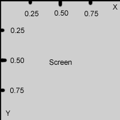

Mod Authoring For UT2K3/HUD
What is a HUD?
The HUD is the graphical representation of information that the user sees superimposed over the action during play. It shows their health, weapons, armor, etc; anything relevant to the game at that time. If you are implementing a whole new game type you may wish to build your own HUD. However, if you wanted to add an element to the existing HUD, e.g. time remaining in the match or perhaps a radar like in the Invasion Gametype, you probably just want to create an Interaction.
Implementing your own HUD
Implementing your own HUD is not that hard. Let's start by simply copying an existing HUD and then making small changes to the code. You can find the HUD class in the following class structure.
Object +-Actor +-HUD +-CinematicHud? +-HudBase +-HudBDeathMatch? +-HudBTeamDeathMatch? +-HudBBombingRun? +-HudBCaptureTheFlag? +-HudBDoubleDomination?
There are several HUD subclasses to choose from. I looked at the one that matched my game type the most. HudBDeathMatch is the class that I wanted to copy so I subclassed HudBase, saved the file as HudBMyNewHUDName in my package and then copied the entire code from HudBDeathMatch.
Then I went into the GameType that I created and added this line in my default properties:
HUDType="MyPackage.HUDMyNewHUDName"
- MyPackage is simply the package that you create and are saving your work.
- HUDMyNewHUDName is the actual name of your HUD class, I chose one that was very similar to the existing HUD types.
Compile the code and start your game and if you handled the copy and paste work correctly then everything should run and appear as normal correctly. The the hard part is trying to figure out everything inside the HUD and how to edit it. So lets actually look at the code.
Inside the belly of the beast
This code below is taken from the HUDBase class and talks about the multiple passes the class goes through when drawing the HUD.
// Derived HUDs override UpdateHud to update variables before rendering; // NO draw code should be in derived DrawHud's; they should instead override // DrawHudPass[A-D] and call their base class' DrawHudPass[A-D] (This cuts // down on render state changes). simulated function UpdateHud(); simulated function DrawHudPassA (Canvas C); // Alpha Pass simulated function DrawHudPassB (Canvas C); // Additive Pass simulated function DrawHudPassC (Canvas C); // Alpha Pass simulated function DrawHudPassD (Canvas C); // Alternate Texture Pass
Each pass takes care of drawing a different aspect of the HUD. Now looking specifically at the functions in our HUD we should note what happens in each function as well as some other functions that are being used.
- DrawHudPassA
- seems to take care of most of the graphical features of the HUD.
- ShowPointBarTop
- and : ShowPointBarBottom : draw parts of the graphical HUD in DrawHudPassA.
- DrawHudPassC
- seems to take care of most of the numbers and strings that the user sees, like his health, adrenaline, crosshairs and other personal information.
- DrawWeaponBar
- draws the weapon bar
So this HUD class uses two of the four passes and then uses three extra function to draw some of the HUD as well. But what is being drawn when it draws the HUD, what are the elements of the HUD. Looking at the element classes at the top of the class I find that there are types of objects being drawn NumericWidget, which controlls all number values (life,shield,ammo), and SpriteWidget, which is every other piece (borders,icons,pictures).
Tackling the NumericWidget and SpriteWidget
In defaultproperties the graphical look of both elements are set. I'm going to specifically look at ShieldCount which is the total amount of shield points that a player has in the game.
ShieldCount=(RenderStyle=STY_Alpha,TextureScale=0.100000,DrawPivot=DP_LowerLeft,PosX=0.500000,PosY=0.500000,OffsetX=0,OffsetY=0,Tints[0]=(B=255,G=255,R=255,A=255),Tints[1]=(B=255,G=255,R=255,A=255))
Now, lets look specifically at what is being set here in detail and go blow-by-blow at each of these attributes.
- RenderStyle
- RenderStyle is an ERenderStyle enumeration. It controls the type of color blending or its effect on the other units that it lays over in the HUD.
- TextureScale
- Texture Scale is the scale that is applied to the texture, relative to a screen resolution of 640 x 480 pixels (that means: at that screen resolution a sprite with TextureScale=1.0 will be drawn one-to-one; at other screen resolutions it will be proportionally scaled up or down).
- PosX, PosY, OffsetX, OffsetY
- 
The values of PosX and PosY are decimal values representing the position on the screen. This frees the user from having to worry about the position of their HUD items in relation to the screen resolution. So if you set the PosX=0.5000000 and PosY=0.5000000 then you always get a position in the center of the screen.
OffsetX and OffsetY are in actual pixels. You might be able to get to the point of the map that you want, but then you want to shift it a specific number of pixels and this is where OffsetX and OffsetY would come into play.
- Drawpivot
Drawpivot is a point on the texture or numeric image.
DP_UpperLeft DP_UpperMiddle DP_UpperRight DP_LowerLeft DP_LowerMiddle DP_LowerRight DP_MiddleLeft DP_MiddleMiddle DP_MiddleRight
The position and offset properties specify a single point on the screen. Drawpivot specifies what part of the bitmap is to appear at that point. So if you specified DP_UpperLeft, the bitmap would "hang" down and to the right of the position specified.
- Tints
- This is the color of the mesh/text and can be dependant on the team (in three color intensity format). Tint[0] is the first team and Tint[1] is the second team. For armor it isn’t important to have the difference in color. I would recommend using a graphical color chooser to find the Red-Green-Blue (three-color intensity) you are looking for.
SpriteWidget
So here are the properties specific to the sprite widget call. Up to this point a lot of them are already covered in the NumericWidget.
- WidgetTexture
WidgetTexture loads the texture from a texture pack for the SpriteWidget. You are able to view all the textures that UT2K3 uses through UnrealEd 3.0. Here is an example of the HUD Textures that are used.
...WidgetTexture=Texture'InterfaceContent.HUD.SkinA'...
This texture is not actual size.
- TextureCoords
- Textures usually come with several on the same sheet. So you often need to specify the rectangle that surrounds the texture that you want. In this case we just want to grab the shield from that texture pack, and so there is a start point (x,y) and then a length in both directions.
TextureScale
The texture scale is a percentage at which you want the texture to be displayed. This is useful as the texture picture is usually larger than you want it to appear in your HUD.
ScaleMode
SM_None SM_Up SM_Down SM_Left SM_Right
This is the side that it is scale from. This is used for the bars that adjust with your health and ammo. Most of those start from the left side. But this is if you plan to have your texture start to get chopped off through use.
Scale
This is a float value that represents how much is cut off from the direction specified above. So for ammo depletion they probably calculate an amount appropriate based on the maximum and how much you are firing off.
Drawing with Numeric and Sprite Widget.
I noticed there were a two function calls: DrawSpriteWidge and DrawNumericWidget.
These are native functions that take care of drawing the two widgets we defined above.
DrawSpriteWidget (Canvas C, out SpriteWidget W) [simulated, final] // Draws the HUD element described by the SpriteWidget W. DrawNumericWidget (Canvas C, out NumericWidget W, out DigitSet D) [simulated, final] // Draws a number.
Calculating the final size of the widget
If your wanting to calculate the final size of the widget, from my observations the formula for doing so seems to be:
SpriteWidgetWidth = (SpriteWidget.TextureCoords.X2 - SpriteWidget.TextureCoords.X1) * SpriteWidget.TextureScale * C.ClipX/640 * MyHUD.HUDScale; SpriteWidgetHeight = (SpriteWidget.TextureCoords.Y2 - SpriteWidget.TextureCoords.Y1) * SpriteWidget.TextureScale * C.ClipY/480 * MyHUD.HUDScale;
Adding a Time Display
So I wanted the user to be aware of the time in the game. NOTE: I'm not sure if this is the players time in game or the lifetime of the game. And so, by example I thought I would go through adding a time display.
Writing a Function
var() NumericWidget myTime_seconds; var() NumericWidget myTime_minutes; var() NumericWidget myTime_hours;
I added these variables near the beginning of the class where the other Widgets were being declared.
Calculating Game Time
I wanted to calculate game time and as I previously discussed I know that some of the information about the game and the players were in it are carried in the GameReplicationInfo and PlayerReplicationInfo classes.
So I created a function that would calculate game time.
simulated function CalculateGameTime() { local int iElapsedTime; iElapsedTime = PlayerOwner.GameReplicationInfo.ElapsedTime; myTime_hours.Value = iElapsedTime / 3600; iElapsedTime = iElapsedTime % 3600; myTime_minutes.Value = iElapsedTime / 60; iElapsedTime = iElapsedTime % 60; myTime_seconds.Value = iElapsedTime; }
This converts the game time in seconds into hours, minutes, and seconds. I didn't want the player to have to do the conversion in their head from the seconds. I imagine I could have done this another way, but these seemed like a good idea at the time.
Getting my time to update
So I created a way to update the game time but I needed to figure out how to get it displayed. I again copied form that the other widgets used. Inside a DrawHudPassC I added this code (replaced some code with a ... for space reasons).
simulated function DrawHudPassC (Canvas C) { local float PortraitWidth,PortraitHeight, XL, YL, Abbrev; local string PortraitString; ... // Screen if( bShowPersonalInfo ) { … //time DrawNumericWidget( C, myTime_hours, DigitsBig ); DrawNumericWidget( C, myTime_minutes, DigitsBig ); DrawNumericWidget( C, myTime_seconds, DigitsBig ); }
C is the Canvas that these Widgets are drawn on, the widgets that I'm drawing are what follow, and the digits that I'm going to use are a set called DigitsBig previously loaded in the defaultproperties.
Giving my Widgets a look in the defaultproperties
myTime_hours=(RenderStyle=STY_Alpha,TextureScale=0.100000,DrawPivot=DP_LowerMiddle,PosX=0.450000,PosY=0.500000,OffsetX=0,OffsetY=0,Tints[0]=(B=255,G=255,R=255,A=255),Tints[1]=(B=255,G=255,R=255,A=255)) myTime_minutes=(RenderStyle=STY_Alpha,TextureScale=0.100000,DrawPivot=DP_LowerMiddle,PosX=0.470000,PosY=0.500000,OffsetX=0,OffsetY=0,Tints[0]=(B=255,G=255,R=255,A=255),Tints[1]=(B=255,G=255,R=255,A=255)) myTime_seconds=(RenderStyle=STY_Alpha,TextureScale=0.100000,DrawPivot=DP_LowerMiddle,PosX=0.490000,PosY=0.500000,OffsetX=0,OffsetY=0,Tints[0]=(B=255,G=255,R=255,A=255),Tints[1]=(B=255,G=255,R=255,A=255))
This places them on the screen somewhere near the center next to the cursor. The important thing is that they were displayed. I also need to go back and give them more space and fill empty zeros.
Comments
Burtlo: I haven't tried creating/adding/editing anything in the texture packs and need to read up on that so I can write more for this tutorial. Also some help on formatting would be great. First time really writing in a Wiki.
Tarquin: Can I move this to [Working with the HUD]? maybe?
Burtlo: I got to this page from the bottom of Making Mods. If you think it would be more useful in a different category [Working with the HUD]? then by all means go for it.
Tarquin: It's not really about "categories", it's just about making page names easier – subpages are not very easy to deal with or link to. And I would rather things were a part of the whole wiki than being seen as part of a smaller work-in-progress document.
Nuleo: Ok so I made a hud and it draws numeric widgets fine but for some reason the sprtie widgets aren't showing up, anyone want to do a tutorial on that?